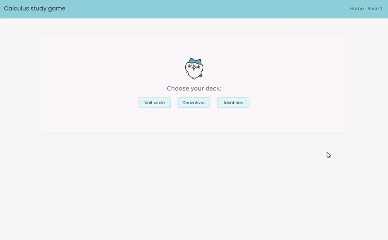

My SEP11 freedom project was a year long project where I was tasked to choose a third-party JavaScript tool to help build my website. I chose to dedicate my website to AP calculus and the tool Vue.js in order to make an interactive study mini-game for multiple key calculus concepts to remember.
I made my project on AP calculus, so it was mostly aimed towards AP calculus AB/BC students, but any student can practice on my website! For this project, I was able to utilize my prior knowledge of JavaScript, HTML, CSS, and bootstrap along with my tool: Vue.js! This project also benefitted me, by improving my own calculus in the long run.
My project had a few challenges, such as not having enough time to implement extra fun features, and some when I first had to decide on a tool.
For my first challenge, I already had my minimum viable product done (MVP), but my peers gave me a lot of good advice on what to add, which I really liked. The main problem was that I didn't have the time to add these extra features which would be beyond MVP, such as feedback or maybe a leaderboard. When I look back on it, I was really being a bit ambitious even though I had good intentions. The state of my website was already fine and showed off some personal additions unique to me, which I was still very proud of. However, if I wanted to be so ambitious again in the future, I really need to manage my time better, especially since all my beyond MVP time cuts close with the timing of my AP exams.
For my second chalenge, I had some difficulty in the beginning when first choosing my tool. I ended up choosing Vue.js, but prior to that I was going to choose React.js. However, there was an issue with React.js which I found really inconvenient: that I couldn't use React.js inside and outside of school. In order for me to use React.js on my IDE (without a CDN), the app I needed to install wasn't something I could download on my school chromebook. This was very annoying, because I wanted to be able to work on my project inside and outside of school for max productivity, but it felt like with React.js, it wouldn't have been possible. Even though I only tinkered with React.js for a week or less, this issue ultimately led to me choosing Vue.js under a whim (since they were similar). I learned to always give yourself more time when testing new things.
I learned that the more ambitious you want to be, the more time you really need to dedicate to your project. Of course, I had the time to complete the minimum viable product, but there's so many other features my peers suggested to add that I really liked which I never got to. Additionally, it's generally good to do more background testing before making a final choice.
My blog entries cover more about the whole process of making my website and goes more in depth.
Preview of the project